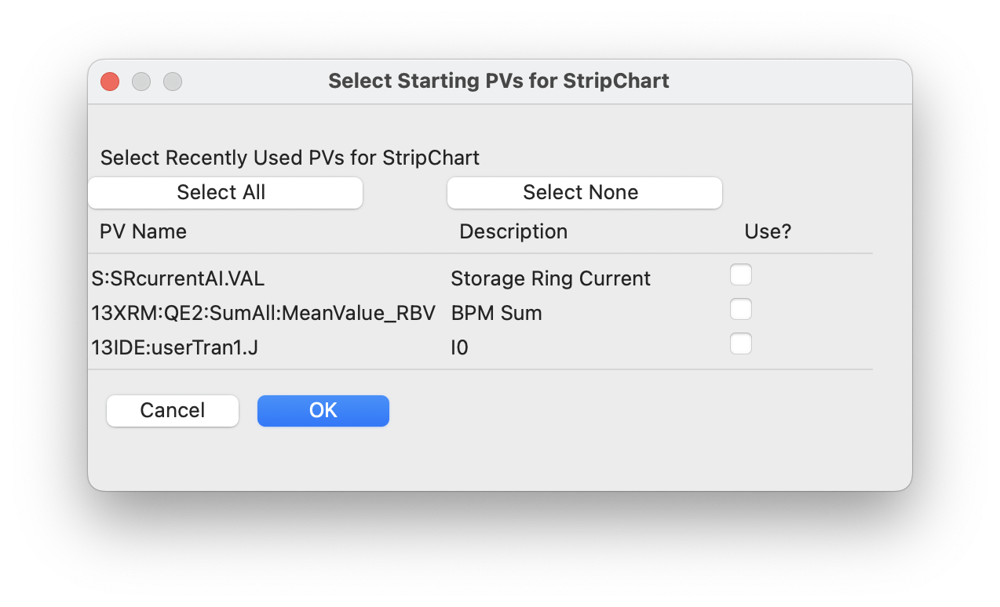

Strip Chart Display¶
StripChart is a GUI application for viewing live time series of PVs. The plots are dynamically updated as the PVs change value. Up to 4 PVs can be plotted at a time, with convenient controls for changing the time range displayed, and setting labels, value ranges, and colors for each PV. Plotting can be paused and resumed, though data collection will continue in the background even while plotting is paused. Interactive graphics with click-and-drag zooming are used, and figures of plots can be saved as high-quality PNGs, or data can be exported to plain text files.
Running Stripchart¶
If epicsapps -m is run after installation, a folder called Epics Apps should be placed on your desktop which has a shortcut labeled StripChart which can be used to launch the Stripchart application. From a command line terminal, you can also use:
epicsapps stripchart
On startip, you will be prompted for a Working Directory. If a configuration file stripchart.yaml is found there, you will be prompted for whether you want to use the PVs listed there. This working folder will also be used as the default folder for and images or data files you save, and will also be searched. A StripChart display will look like this:
Usage¶
To use StripChart, you can add PVs to be monitored in the upper left entry. Once a PV connects, it will be added to the drop-down menus for each of the 4 available traces. Colors, Y-ranges, and descriptions (used for the Y-axis labels) can be altered at any time and will be refleced in the live plot. To save these settings for future sessions, press “Save PV Settings” in the upper right. While only 4 PVs can be displayed at one time, StripChart can be recording more than that and you can change which PVs are displayed and in which order.
The time range (which is time from the present) can be adjusted on the right-hand side, just above the plot. You can select time units of seconds, minutes, or hours, and the value displayed will be adjusted.
The “Pause” and “Resume” buttons pause and then resumes the plotting of new values so that you can zoom in on parts of the plot using Left-Down and Drag. Note that data collection will continue while the plot is paused, and resuming the plotting will show the most recent data.
From the “File” Menu, you can save plain text files with the time series data for all monitored PVs, or save a PNG image of the plot. With the mouse over the plot window, Control-C will also copy the PNG image to the clipboard.
You can also configure the plot from the “Options” menu.
Reading PVs from previous sessions¶
On startup, if a file called stripchart.yaml is found in the working folder, it will be read, and you can select PVs from that file to use. You can also read PVs from a configuration file using File Menu->”Read Configuration”. When you choose to read a configuration file, this will bring up a dialog like this:
{kind=link}
where you can select which of these PVs to import.
This configuration file will include a list of the PVs (and saved descriptions, ranges, etc), and might look like this:
pvs:
- ['S:SRcurrenxtAI.VAL', Storage Ring Current, false, '', '']
- ['13XRM:QE2:SumAll:MeanValue_RBV', BPM Sum, false, '', '']
- ['13IDE:userTran1.J', I0, false, '', '']
Here, for each PV, the name, description, whether to you Log-scale, minimum value, and maximum value are written.
When StripChart is closed, it will save its configuration to stripchart.yaml in the current working folder, making a backup if needed. That way, when you restart StripChart, you can pick up with a previous set of monitored PVs.
Long-Running processes and memory use¶
StripChart records and keeps all changes in values for each PV it is monitoring. In fact, it saves the time (as a 64-bit float) and value (which will typically also be a 64-bit float) for each event for each monitored PV. To prevent too much memory usage, StripChart limits the total number of events it keeps for each PV to 8 million samples. When that number is exceeded some of the oldest data is removed. For PVs that change constantly at 10 Hz, this limits the historical values to a history to about 9.5 days. If you are looking to record data for longer than that, consider using PV Logger.
A note on Time Zones¶
The values plotted with StripChart uses date and time for the X axis. The data received uses normal Unix timestamps (seconds since 1970, recorded as floating point numbers). When converting these to date and time for plotting, the current time zone must be known.
If the displayed times are incorrect, it may be because the timezone is not properly set. StripChart tries to automatically determine the local timezone, but this may not always be correct. Setting the system environmental variable TZ to hold the name of the time zone (such as US/Eastern or Australia/Melbourne) should make the times be displayed correctly.